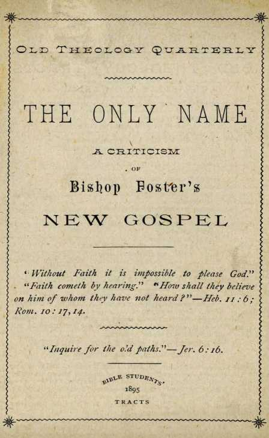

No. 25—The Only Name—A Criticism of Bishop Foster’s New Gospel
NO. 25.—JANUARY, 1895.
Entered as Second-Class Mail Matter, at the Post Office, Allegheny, Pa.
FOR THE PROMOTION OF
CHRISTIAN KNOWLEDGE.
QUARTERLY, SIX CENTS A YEAR ; SAMPLE, FREE.
NO. I. THE WAGES OF SIN.
NO. 2. CALAMITIES—WHY GOD PERMITS THEM.
NO. 3. PROTESTANTS, AWAKE !
no. 4. dr. talmage’s view of the millennium.
NO. 7. THE WONDERFUL STORY —POEM, I 56 VERSES.
NO. 9. SWEDISH TRANSLATION OF TRACT NO. I.
NO. IO. A BASIS FOR TRUE CHRISTIAN UNION.
NO. 12. WHY EVIL WAS PERMITTED.
NO. 13. NORWEGIAN TRANSLATION OF TRACT NO. I.
NO. 14. A DARK CLOUb AND ITS SILVER LINING.
NO. 15. A REPLY TO ROBERT INGERSOLL.
NO. 17. PURGATORY.
NO l8. REPRESENTATIVE OR SUBSTITUTE?
NO. 19. NORWEGIAN TRANSLATION OF TRACT NO. 14.
NO. 20. SWEDISH TRANSLATION OF TRACT NO. 14.
NO. 21. DO YOU KNOW?
NO. 22. THE WORLD’S HOPE.
NO. 23. GERMAN TRANSLATION OF TRACT NO. 21.
NO. 24. BIBLE STUDY AND STUDENTS’ HELPS.
NO, 25. THE ONLY NAME-A CRITICISM OF BP. FOSTER’S NEW GOSPEL.
SPECIAL ISSUES —LEATHERETTE BOUND.
NO. 8. THE WONDERFUL STORY, ILLUSTRATED, 60 pages.
NO. II. TABERNACLE SHADOWS OF BETTER SACRIFICES, ILLUSTRAT. NO. l6. REPLY TO ROBERT INGERSOLL.—44 pages.
Extra Copies of these special issues are supplied to all regular subscribers at io cents each. Colporteurs are authorized to sell these special issues at three for 50 cents.
TOWER BIBLE & TRACT SOCIETY,
BIBLE HOUSE, ALLEGHENY, PA.
*** We specially commend, both to honest skeptics and to saints, “The Plan of the Ages.” No book of its size, known to us, so fully unfolds the divine plan,revealed in the Scriptures. It is a veritable ‘ Bible Key,” and is well described as “A Helping Hand for Bible Students.” We can supply it by mail, cloth bound, for $1.00, or in paper covers for 25 cents; or we will loan it to the poor, who will promise a careful reading and to pay return postage.
A CRITICISM OF Bishop Fosteh’s UzETnr CtOspel.
Sunday, September 23rd,’94, BishopFoster preached before the Pittsburg Annual Conference of the M. E. Church, over whose sessions he has presided. We give extracts from his discourse, which has attracted considerable attention, as reported by three of Pittsburg’s daily papers, as follows:—
“If I could concede for a moment that the world as I know it, and I know it from rim to rim, having traveled ‘in all its lands, having seen its dissolute, despicable millions, having seen it in shame and filth, and if I were compelled to think that my God, whom I worship, would by any possible method of condemnation send down to hades 1,200,000,000 of my brothers, that know not their right hand from their left, and save a few of us who are a little better perhaps in our morals, I would not go into heaven if I could. I could not worship such a God as that. I would join the hosts of hades in rebelling against such a God. Our God is not a God of that kind. God is love, and is trying to save men.”—Pittsburg Dispatch.
“ If I believed that God would send down to a hopeless eternity 1,200,000,000 of my brothers who are little worse than I am, I would not worship him. I have seen the world all over, know it from rim to rim, have seen its desolate and despicable people, and these I speak of hardly know their right hand from their left. God won’t condemn all these. He’s saving all men that he can. If I thought he would condemn all these, I would join the forces of the devil in hell, in rebellion against such an act.”—Pittsburg Post.
The accounts of the two reporters are sufficiently alike to insure us that no serious mistake has been made as to the t-enor of the Bishop’s expression. But surely it is a remarkable expression, coming as it does from the foremost bishop of the M. E. Church. The bishop is, as he declares, well posted upon the condition of the vast heathen world—four-fifths of the living human family. He is well posted also respecting the missionary machinery for the civilization and conversion of these millions. He knows that while it was never before so complete as at present, yet, even now, the natural increase is proportionately far greater than the ratio of conversion. The bishop sees no hope for the heathen through the preaching of the gospel, and hence “flies the track,” and leaves the Bible plan of salvation,—faith in Christ’s redemptive work, a faith that comes by hearing of the word of God, the Gospel of salvation, a gospel which is the power of God unto salvation to every one that believeth.—Rom, io: 17; 1: 16.
Why should this intelligent man, a leader of thought amongst a very intelligent class of Christians, thus leave the gospel of the Bible ? a gospel which declares: “Without faith it is impossible to please God ;” “ He that believeth shall be be saved, and he that believeth not shall be condemned;” “Hethat hath the Son hath life, and he that hath not the Son shall not see life, but the wrath of God abideth on him;” “Believe on the Lord Jesus Christ, and thou shalt be saved;” etc., etc. Why should he, as above, preach another gospel—the gospel of the merit of ignorance? the gospel of salvation without faith?—the gospel of salvation by works?—the gospel of a salvation without a Redeemer? for, if the heathen are to be saved because God could not do otherwise than save those who “ know not their right hand from their left,” or to keep the bishop from joining “ the forces of the devil in hell in rebellion against such an adt,” then Christ’s death was in vain; it certainly is no fadlor in the gospel which the bishop is preaching (of a general heathen salvation in ignorance of the only “name given under heaven or amongst men whereby we must be saved ”) even though his text was, “When the fulness of time was come, God sent forth his Son.”
The reason is that the bishop’s intelligence has outgrown his theology. He has spent more time and honest mental effort in viewing the world from rim to rim and studying its social and moral questions than he has spent in studying his Bible from cover to cover with an honest desire to learn God’s explanation, in it, of his purposes for the blessing of the world of mankind through faith in Christ, and obedience to the law of his Kingdom.
THE NEW GOSPEL POPULAR.
The bishop’s new gospel will strike a responsive chord in many hearts—in the hearts of missionaries who know better than others how little they really accomplish;—in the hearts of worldly people, who will say, That is what I always believed; faith never saves anybody ; it is works or nothing;—in the hearts of worldly Christians, who will say, That relieves me greatly ; I believe that our great religious leaders are advancing far beyond the old-fogy faith ideas of the past, to see that it is not what we know or believe, merely, but what we do, or God’s free grace, that saves us. The modern agnostic and higher-critic will say, That is the way to talk; it is time people were being taught to cut loose from those narrow expressions of the Bible which so evidence the narrowness of the minds of the Lord and the apostles. Indeed, almost all classes will be prepared to welcome the bishop’s new gospel.
How strange that all of these are so averse to the Scriptural explanations of these questions which trouble the bishop and all men who are even beginning to think! How strange that those who will applaud the bishop’s new gospel will entirely overlook one feature of it, which, if true, would certainly stamp it as bad tidings to all the holy ones who through patient perseverance in well doing have cultivated faith, trust, hope and love, and developed character from grace to grace and from glory to glory 1 What would these, who, through the faith that overcometh the world and by much tribulation, enter the Kingdom of Heaven,-think of it, if within the pearly gates, where they had anticipated so much of love and pleasure, they were to find the hundreds of millions and billions of ignorant, degraded, depraved and characterless of heathendom pouring in upon them and outnumbering them to such an extent that a saint would be a hundred'times harder to find in heaven than now on earth ? To say the least, they would be astounded; and if an explanation were asked, and Bishop' Foster were given the opportunity to reply, and had not changed his opinion, he doubtless would say that, after having done all he could for them on earth without success, and fearing that the bishop would join the forces of the devil and thus make a bad matter worse, God did not know what else to do with the heathen than take them to heaven.
Would that the goodhearted, but benighted, bishop would face about and see the Millennial dawn, the increasing light of the Sun of Righteousness now shining forth! He then would see what he does not see now, that God’s plan as presented in the Bible is transcendently more reasonable, more benevolent, more just and more practicable than any which he or other human beings could possibly concodt or outline.
THE TRUE GOSPEL.
What would he see? Briefly this: That God’s time for giving the heathen to Christ (Psa. 2: 8) is in the Millennial age and not in this Gospel age; that when God undertakes the work of causing the knowledge of himself to fill the whole earth, it will be done; for his Word shall not return unto him void; it shall accomplish that which he pleases and prosper in the thing whereto he sent it. (Isa. 55:11.) He would see iteit this knowledge of God is to reach, not only the very ignorant heathen of foreign lands, but, as well, the very ignorant of civilized lands; for “ all shall know God, from the least to the greatest. ’ ’ He would learn that the Millennial age will not only be a time for gaining knowledge of God, but a time when the obedient will be blessed with restitution to all the privileges and qualities and powers of mind and body lost by disobedience by Adam for himself and all his posterity,—redeemed by the Second Adam’s sacrifice for sin, once for all. He would thus see that the Millennial age will be the great purgatory time in which the world in general will be permitted, if they will, to wash at the fountain opened in the House of David for sin and uncleanness (Zech. 13: 1);—by faith in the blood of Christ to be made every whit whole, and fit for the fellowship of angels and saints.
The bishop would learn, moreover, that nothing unclean or unholy can enter God’s presence and be acceptable with him, and that, as the Church is now called to be saints and to practice holiness (“ without which no man shall see the Lord”), so it must be with the heathen when, during the Millennium, they are called, taught and released from the blinding influences of Satan. Only the pure in heart shall ever see God or enjoy the bountiful .provisions prepared for those who love him.
Then Bishop Foster would be prepared to learn something respecting God’s purpose in the call of the Church, and what is the hope of her calling. (Eph. 1:18.) Soon he would see that as God selected one class of servants during previous ages, to be used in his great plan for the future blessing of the world, so during the Gospel age he has been selecting a household of sons to be joint-heirs with Jesus Christ, the Lord and Head and Redeemer, in the Millennial Kingdom and its work of binding Satan and opening the eyes of the world so long blinded by Satan.—ACts 15:14; Rev. 20:1-4.
Soon the Bishop would be not only studying this blessed Gospel of the Bible, but circulating these truths amongst his friends, and in every w-ay preaching the old gospel, the old theology ■—that “ Christ Jesus by the grace of God tasted death for every man,” that “ he gave himself & ransom for all, to be testified in due time;" and that eventually the “true Light” will lighten ‘‘every man that cometh into the world.” —Heb. 2:9; 1 Tim. 2:4-6; John 1:9.
THE BISHOP’S SYMPATHY FOR THE HEATHEN IS APPRECIATED.
We do not find fault with the Bishop’s sympathy for heathendom, nor with his rebellion against an injustice which would consign them to an eternity of woe, mental or physical. Nay, we rejoice that he can see that such procedure is so unjust that it cannot possibly be the truth: it cannot possibly be God’s plan. We rejoice that the Bishop is so free from the errors of Calvinism that he cannot believe that the 1,200,000,000 of heathen now living, and the fifty times that number who have died without the knowledge of the only name given under heaven and among men whereby they can be saved, were predestinated by God to their present ignorance and to an eternity of woe hereafter.
We rejoice also that he has gotten free from the idea of his own Church ; viz., that the power of God for the help of the heathen is confined to this present life and to the present missionary efforts of his children, and that the vast multitudes not so reached and blessed will suffer untold agonies to all eternity;—not because God predestinated that it should be so, but .because God and his faithful people are doing all they can for the poor heathen, and can do no more.
All this indicates a breadth and freedom of thought and a sympathy of heart on the part of the Bishop which we greatly appreciate. But we fear for the Bishop and for his flock, because his freedom and sympathy are not begotten by the teachings of God’s Word. His lengths and breadths, and heights and depths of good desire for the heathen are not those inspired by God’s revelation of his plan. Consequently, the the more the Bishop and his followers progress upon these lines, the farther they will get from the true plan of the ages—the lengths and breadths, the heights and depths of the love of God, which surpasses human understanding.— Rom. 11 : 33-36.
This tendency to depart from God’s Word is markedly manifested in other parts of the same discourse, and cannot fail to lead many of the “blind” “ into the ditch.”—Matt. rguq.
EVOLUTION MISLEADS THE BISHOP.
For instance, we quote as follows from the report of the same discourse, as it appeared in the Pittsburg Commercial Gazette.
“Why did not Christ come immediately after the fall of man ? Why was not Revelation made at once? Simply because it could not be. . . . In Eden language took form, but it was not sufficient for Revelation. Adam probably knew very little, and God treated him accordingly. He d'd not give him such a law as he gave to Israel at Sinai, but he treated him as you would an infant.”
Here we see the effeft of the Evolution theory, in which the Bishop is evidently a believer. Since that theory is the very opposite of the Bible theory, conflicts at every point’are unavoidable. The Bishop looks at our civilization, then backward along the aisles of history, noting the ignorance of the past upon every subject. He, with all others who lose confidence in the Bible, jumps to the conclusion that Adam was an infant, with whom language began to take form. He, however, states the matter more agreeably and more Scripturally than to say that Adam was an ape of a high order of development, and that in him the ape chatter began to take form, or to become a language.
The Bishop is right in supposing that his words were more acceptable to his hearers than if he had put the matter bluntly, as Darwin and others have done. The Bishop’s language, however, is the more dangerous ; for it sugar-coats the dodtrine and hides its true unscriptural character from some of God’s children who would resent, as unscriptural, the idea that Adam was an ape and that his race has ‘fallen upward ’ ’ for the past six thousand years.
The Scriptural position, briefly stated, is that God, instead of creating Adam down at or near the brute level, created him in his own image and likeness, and pronounced him, Very good ! God does not, however, pronounce the natural man of to-day, Very good. On the contrary, he declares that all have sinned; all are out of the way; all are fallen; there is none righteous, no, not one; and that only under cover of the imputed righteousness of Christ can any be acceptable with God or have communion with him. But Adam had fellowship and communion with God and was called his “ son ” (Luke 3:38), up to (lie time of his transgression and sentence.
LANGUAGE AND BOOKS.
The Bishop says that Adam’s knowledge of language was so crude that God could not then make a Revelation. The Scriptures tells us, to the contrary, that God did make revelations to Adam—“talked with him” (Gen. 1:28-30; 2:15-17,23; 3:8-20);—but God does not deign to communicate at all with the modern man, except he become a “believer” in Christ. The flood of Noah’s day has left no traces of the early civilization, so far as is now known; but we may safely suppose that the man whom God called a very good man and declared to be in his own image—the man who could talk with God and with his wife, and who could not only name the animals, but control them, and that without brute force, was such a specimen of human nature as we do not see to-day. It does not follow that they had a written language in Adam’s day, or that they printed books or had the law written upon tables of stone. Perhaps they had conditions which were preferable. Perhaps they had means of communicating thoughts without writing and printing. We believe they had. The necessity for written language may (we believe does) lie in the fail that Adam’s race has fallen from the original, perfect state in which he was created.
Our present dependence upon language and books, etc., and the consequent development of these to meet our necessities, may be illustrated as follows: Suppose that a racial weakness of the ankles had set in as the result of the fall, so that none were able to walk without crutches. The crutches at first introduced would probably be very clumsy; but, as time progressed, the shapes and finish and ornamentation of articles so useful would surely progress also. Then men unguided by the Scriptures would probably philosophise thus: “See how crude, compared with ours, were the crutches in use a few centuries ago;—Adam probably lay around unable to walk at all, or merely crawled about, pulling himself by the roots and branches of trees and bushes. The Bishop, philosophising from the same standpoint of thought, might have changed the expression above and said, “Why did not Christ come immediately after the fall of man ? Simply because it was in Eden that locomotion began, and that in a crude form of crawling. The helps or crutches of that time would not have been sufficient to enable him to go about to preach the gospel.”
Language and books are merely the crutches which partially make good the defeats of the human mental powers incident to the fall— lack of mental perception and lack of memory. Does anyone suppose that in heaven God and the angels are dependent solely upon spoken and written language, books, etc., that some of the angels are printers, and others binders? Neither should we suppose that the perfect man needed such helps or crutches, but that these developed to meet his wants, and that as those wants or imperfections of man disappear during the times of restitution—which God hath spoken by the mouth of all his holy prophets— these will be unnecessary. (Acts 3:19-21.) Undoubtedly, however, language and books will continue among men even after the powers of mental discernment and expression have been restored to them during the Millennium.
GOD’S LAW IN THE HEART.
In full harmony with this is the promise of the Lord—“This is the covenant that I will make with them after those days, saith theLord: I will put my laws into their hearts, and in their minds will I write them.” (Heb. 8:10; 10:16.) Here the law written upon tables of stone,and given at Sinai, under the typical Covenant, is contrasted with the better arrangement of the New Covenant, which will ignore a written language entirely and write upon the hearts. The context shows that when the law has been thus written upon the hearts of all antitypical Israelites, who make this New Covenant with the Lord through Christ, there will no longer be any teaching, for none will be ignorant of the Lord. — Jer- 3I:33>34- .
And this condition, which is Io be ushered in by the Millennial age or “ times of restitution,” will correspond exactly to the conditions previous to the fall. The law to Adam was not in book form, nor upon tables of stone, but infinitely better: it was written in his heart and brain—in his very nature. He knew right from wrong by the operation of his perfect brain. Being “very good,” a likeness of his Creator, he needed no reminders as to God’s will. And the law given at Sinai twenty-five centuries later, instead of being a higher expression of the divine will, was a very much inferior expression, when compared with the perfect mindand-heart-written law bestowed upon Adam.
The Apostle Paul corroborates all this, and tells us that all men have some traces of this original and superior law. Referring to same of the most degraded members of the race, he says, these “ show the work [evidences] of the law written in their hearts.” (Rom. 2:15.) And in the preceding chapter the'Apostle shows how it comes that some of the heathen are so very much more degraded than others,—how the original nature-written law came to be so much more nearly effaced from the hearts and brains of some of earth’s families or races than from others. “ Because that, they knewGoA
[in the remote past], they glorified him not as God, neither were thankful; but became vain in their imaginations, and their foolish heart was darkened. Professing themselves to be wise, they became fools; . . . wherefore, God gave them up to uncleanness. . . . And even as they did not like [prefer] to retain God in their knowledge, God gave them over to a reprobate mind.”—Rom. 1:21, 22, 24, 25, 28.
The Apostle’s explanation of present degradation is a fall down from a height; a failure to retain God in their knowledge—an effacing of the law from their hearts and minds. The Bishop, on the contrary, teaches that the race begun in the infant Adam, one'degree above an ape, had not, previous to the coming of Christ, progressed sufficiently to be able to receive a revelation from God,—human language until then being too imperfect. Which is right ? the inspired Apostle or the Bishop? Evidently the worldly-wise theory of the latter respecting Evolution is hindering his study of and faith in the Scriptures. But we must accept the consistent theory of the Scriptures, though it separate us entirely from the philosophies of the worldly-wise.
In speaking of the cause of Adam’s ejection from Eden, the Bishop says “fall; ” but what does he mean ? Evidently, from the general tenor of his discourse, he means that Adam and his race have been “falling upward" for six. thousand years. The “ infant ’’ Adam, one degree superior to an ape, fell up to the present civilized wczzzhood;—as the result of disobedience to God’s commands! Surely any who believe this gospel would be justified in saying, Let us do evil that good may follow!
But those who prove the Bishop's words by Scripture, and who seek “ to the law and the testimony,” will turn from such inconsistency of human reasoning. Such would ask the Bishop, Where then would be the room for, or necessity, or value of, the ransom for all, given by our Redeemer? From what could he redeem men, if Adam’s course were so beneficial ? And why should the promise of restitution (restoring to Adam’s condition) be held out by God at the mouth of all the holy prophets ? (Adis 3: 21.) Surely, restitution of even semi-civilized peoples to a babecondition, one degree above the ape, would be a curse, a retrogression, an injury, a most undesirable thing !
THE BISHOP AND THE BIBLE ON DEATH.
One error leads naturally to another : consequently we find the following unscriptural statement in the same discourse. The Bishop is reported to have said :—
“ We think sin caused death, and we are accustomed to say so. It is not true I Death is God’s normal method of the universe ! God made the universe for death I ’ ’
The vast majority of Christian professors would agree with the Bishop, and could scarcely tell why they sometimes have associated death with sin ; when they knew all the time that they recognized no relationship. We suggest area-son for this. It is because they sometimes read the Bible, and they find it thus stated therein. But as they get to believe that the race is falling up, and that the Bible was written by wellmeaning men far down below present development—by men who never saw an eledtric car or a bicycle or a telephone—they will get to have-less and less care for what the Bible says upon this or any subject. But let us examine the Bible-and note how positively it contradicts the Bishop-—or, as the Bible existed first, we should say,, how positively the Bishop’s expression contradicts the Bible. It says
“ The soul that sinneth, it shall die.' ’—Ezek.. 18:4.
“ The wages of sin is death.”—Rom. 6 : 23.
“By one man’s disobedience sin entered into the world, and death by [or as a result of] sin.”—Rom. 5:12.
“By one man’s offense death reigned.”— Rom. 5:17.
“ By the offense of one judgment came upon all men to condemnation [to the wages of sin,. death].”—Rom. 5:18.
“ Sin hath reigned unto death.”—Rom.jrzi.
“Since by man [Adam] came death.”— “In Adam all die.”—1 Cor. 15:22.
“The sting of [or which produces] death is sin.”—1 Cor. 15 :,56.
“Sin, when it is finished, bringeth forth death.”—Jas. 1:15.
[n harmony with these words of the apostles and prophets was the declaration of God to Adam when he placed him upon trial, in Eden, “In the day [2 Pet. 3:8] that thou eatest thereof, dying, thou shalt die;" and as expressed by Eve,—“ God hath said, Ye shall not eat of it, neither shall ye touch it, lest ye die." It was Satan that declared, “Ye shall not surely die," as the result of transgressing God’s command. How strange that the Bishop and so many others place themselves on the side of Satan and join in his contradiction of God’s declaration, and with him join in deceiving mankind respecting “ the wages of sin.”—Gen. 2:17; 3:3> 4-
The Bishop’s confusion respecting the heathen millions is largely because he fails to see clearly the Bible doCtrine of the fall of Adam into condemnation of death, and that the terrible ravages of death (with its attendant features, sickness and pain) which for six thousand years have rested so heavily upon the race are God’s “curse"—the “wages” orpenaltyforsin. Failing to see that hades, the grave, is the penalty for sin, and an awfully severe, though just, penalty, the Bishop and millions of others have for years looked for and imagined a place where devils will riot in pleasure to all eternity, enjoying the torments they will, by God’s will and providence, or by his inability to prevent, inflict upon billions of the human race. Having misconceived the meaning of the words sheet and hades, rendered “hell” in our common version Bible (Can we really excuse an educated man on the score of ignorance as to the meaning and Scriptural use of these words?), and having outgrown the unscriptural eternal torment theories, the Bishop is wandering about looking amongst the most fallen-up men for some modern theory that will prove that death, and pain and sickness are blessings, and that the heathen as well as the saints enter by this gateway into a heaven where the few developed Christians will be perfectly happy, surrounded by myriads of characterless heathen, idiots, etc.
If the Bishop would find the path of life which God has provided, for there is no other, let him retrace his steps; let him acknowledge that God created man upright, but that he sought out various contrary devices and defiled himself. (Eccl. 7:29.) Then let him admit the fall of man downward—mentally, morally and physically. Then he will find a place for the ransom for all—Christ’s death—to redeem man from the sentence of death. Then he will find a place for the restitution to their “former estate” of human perfection of all who will receive Christ and obey him. (ACts y.iq-zu; Ezek. 16:48-63.) Then he will find a use for the Bible dodtrine of a resurrection of the dead, which would be an absurdity if there be none dead. Then the Lord’s promise that “All that are in their graves ■shall hear the voice of the Son of Man and come forth,” will have a meaning (John 5:25-29); and soon he will see that the hope for the heathen of foreign lands, living and dead, and the dnly hope for the vast majority of civilized lands, will be the great Kingdom of Christ during the Millennium, for which we were taught to pray, “ Thy Kingdom come, thy will ibe done on earth as it is done in heaven ; ”—a prayer not yet answered. And in connection he will find that the Church is the “ little flock ” ■to which it is the Heavenly Father’s good pleasure to give this Kingdom—in association ■with Christ her Head and Bridegroom;—that the Kingdom cannot come until the Church has been completed,—and that not until then can “all the families of the earth be blest ” with the promised Millennial blessings and opportunities.—Luke 12:32; Rev. 20:4; Gen. 28:14.
One more point before we close. We quote again from the report of the same sermon :—
GOD FORCING MEN TO SIN.
“ God gives impulses to reach out and take that which we should not have. But when, to indulge these desires, we step over the law with which he has hedged us about, we commit sin.”
Hr re the Bishop is driven by the other errors-he holds to this almost blasphemous statement that God not only pbces temptations before men, but that he actually impels or forces them to do sin; for this is the significance of the word ‘[impulse . ” Webster defines it, “impelling, or driving onward.” To say that God impels or impulses or drives mankind to choose “that which we should not have,”’and then “hedges us about” with contrary commands so as to entrap us in sin, would be to give him the character which properly applies to Satan.
If at the time of his trial Adam was ignorant of right and wrong, or if God impelled him to do the sin, surely that was not a fair trial. And to so teach is to declare God unjust, not only as to the trial, but still more so in respedt to the punishment inflicted because of that failure ■—death, including all sickness, pain and trouble. This view would make God the great and really the only sinner, his penalty a sham, and the Bible doritri ne of man’s redemption with the precious blood of Christ a farce; for if man did not do the sinning, he was not guilty and needed no redemption, and God, who impulsed or impelled an imperfect creature to sin, was alone blameworthy, properly deserving of punishment.
But how inconsistent all this is when compared with the simple account—the only inspired account. The Bible shows Adam “upright,” “very good” in God’s sight, an “image of God ” in flesh. It shows his fair trial, his just sentence, God’s sympathetic love for his creature, even in his fallen condition, and his abundant provision for him in the gift of his Son‘for his redemption and restitution. The Bible theory is consistent with reason : other theories are not so.
How clearly the Scriptures contradict the Bishop, saying, “ Let no man say, when he is tempted, I am tempted of God; for God cannot be tempted with evil; neither tempteth he any man.”—Jas. 1:13.
But the Bishop’s argument appears in a still worse light when its different parts are united. For instance, take the suggestion that Adam was an inexperienced “infant,” with whom language only began to take form and was “insufficient for revelation add to this the statement that God impulsed or impelled him to take the forbidden fruit and thus to break his laws; add, thirdly, the proposition that God falsified to the “babe” Adam, and told him that he would die for his disobedience, while he really meant no such thing (for the Bishop says, sin did not cause death : “ Death is the normal [regular, proper] method of the universe”), but intended thus to develop humanity and bring it up to perfection.
Can any one imagine a more nauseating theological compound than this? Verily, as the Lord foretold through the prophet, “ The wisdom of their wise men shall perish, and the understanding of their prudent men shall be hid.” (Isa. 29:14.) Read also verses 9-13, applicable at the present time.
Such teaching, from such a high dignitary, in so popular a church as the Methodist, is sure to have much bad fruit, and that quickly, in the ranks of the ministers, as well as amongst the “laity.” Indeed, we were not surprised to learn that within two weeks after this discourse by the Bishop, an M. E. pastor in our city preachedabout Adam being a big, ignorant baby, and that his temptation and fall were necessary in order to develop him.
How needful that God’s people see the truth, to keep them from following such blind guides and stumbling into the pit of unbelief and agnosticism ! Those whose eyes have been anointed by the eye-salve of truth, and who now see the real beauty and harmony of God’s Word, should not be satisfied to rest in the truth and to render thanks therefor. They should “ preach the Word,” the gospel of salvation by the cross and not by a fall upward (evolution), nor as a reward for ignorance. Those who do not get the truth speedily, will get the error; for Satan’s time is short and his deceptive theories are many, while the truth is one.
A SURE TEST.
A sure way to test all theories is to square them by the dodlrine of the ransom. Every theory which asserts that Adam did not fall from perfection of life into death, or which says or implies that his fall and that of his race has been upward, denies the ransom, whether its advocates so admit or not; for, if nothing was lost, nothing could be redeemed or bought back. If it denies that man’s life was forfeited by sin, it cannot claim the sacrifice of Christ’s life as “a ransom [a corresponding price] for all ” If death be the normal or proper condition, and not the wages of sin, then Christ’s death could not pay our penalty; and, indeed, from the evolution standpoint, there is no penalty for disobedience, but, on the contrary, a reward—of civilization and development. There is no necessity, no place, for a ransom in any such theory. All modern theories thus deny the ransom.
The most insidious and dangerous “enemies of the cross of Christ ” are those who, professing to be his servants and to preach his gospel, attack it on the inside, by denying that God’s work was perfect when he created man (Dent. 32:4); that man fell from that perfedtion and divine likeness; that the right to recover him out of sin and death, to “ that which was lost,” was purchased of Justice by “ the precious blood [shed,—death] of Christ. ’ ’ By whatever ways any may attempt to climb into the sheep-fold, they are wrong ways, and their advocates are pronounced to be “thieves and robbers.” (John 10:9-11, 15.) The keystone to the divine plan is that “ the man Christ Jesus gave himself a ransom [a corresponding price] for all, to be testified in due time.” (1 Tim. 2 : 6.) Whatever theory does not square with this, absolutely and in every particular, is thus proven to be a false one.—2 Cor. n : 13-15.
* * *
We will supply our readers with plenty of these criticisms of the Bishop’s views, and trust they may do good in the way of opening the eyes of some of the Lord’s sheep to see where their trusted, but blind, shepherds are leading them. But do not stop with this: sell or loan or give them speedily other reading matter— especially ‘ ‘ The Plan of the Ages. ’ ’ (See second page.) We will loan a copy, post free, to any who will promise a careful, prayerful reading, and to return the book post-paid or twenty-five cents instead.
PITTSBURG CHRISTIAN ADVOCATE’S REPORT.
The foregoing was published in Zion’s Watch Tower (Allegheny, Pa.), October I and 15, ’94, and has created considerable comment in religious circles. So numerous were the inquiries addressed to the Christian Advocate (Pittsburg, Pa.), respecting the truthfulness of the reports which appeared in the secular press, that the Advocate published, on Od. 25, ’94, a full stenographic report of the discourse in question, made by Rev. J. J. Hill, the Conference Secretary.
Said report is before us at this writing, and it fully corroborates all the quotations made from the secular press by Zion’s Watch Tower and in this trad.
FURTHER READING MATTER FREE!
Look at the list of trads on page 2 of this trad, and seled a sample one or two that you would like to read, and send a postal card request for them. We will take pleasure in sending them free of any charge.
Should you feel deeply interested in Bible study, and desire to know just what hope the Lord holds out tor the heathen world, for the Jew and for the Gospel Church, we commend to you The Plan of the Ages as being the most instrudive Bible Key ever published. We will be pleased to supply you with a copy (paper covers, 350 pages) postpaid for 25 cents. Or, if you are too poor to purchase, and will send a promise to read and return the book postpaid within a month, we will loan you a copy. We wjfnt that the truth respeding God’s great plan of salvation should come to the attention of all who are truly his people. Address
TOWER BIBLE & TRACT SOCIETY,
BIBLE HOUSE, ARCH ST., ALLEGHENY, PA.